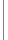
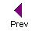
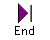
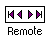
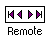
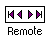

Search this site
on/off'; return true" onMouseOut="mOFF(8,7)">
Search this site on/off" width="50" height="40">

 Search this site on/off" width="50" height="40">

Search this site on/off" width="50" height="40">
